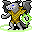

ドラコニアンの嵐招き Draconian stormcaller
英語版 CrawlWiki の記事「Draconian stormcaller」(0.34 向け、2026-09-19 版)の翻訳です。原文の著者は編集履歴をご覧ください。
ドラコニアンをすべて見るにはドラコニアンの一覧を参照。
| ドラコニアンの嵐招き q  | |
|---|---|
| HP | 58-118 |
| HD | 16 |
| XP | 1148 |
| 速度 | 10 |
| AC | 10 |
| EV | 10 |
| 意志力 | 60 |
| 攻撃1 | 20(打撃: 通常)
|
| 耐性 | rC+ |
| 弱点 | なし |
| 生息地 | 陸上 |
| 知能 | 人間並み |
| 使用 | 武器と防具 初期装備 扉を開ける |
| 分類 | 生物 |
| 体格 | 中くらい |
| 種類 | ドラコニアン、ドラコニアン |
| フラグ | 冷血 話す 邪悪 |

| クァズラルを崇拝することで雷鳴の力とドラゴンの仲間を得たドラコニアンだ。
(歌詞の引用のため本文は省略) |
基本情報
ドラコニアンの嵐招きはクァズラルの司祭で、デスドレイク、沼ドレイク、風ドレイク、霜ドレイク、リンドヴルムといった小型のドラゴンの手を借りるほか、クァズラルの能力である自然の怒りと打擲の一撃も使う。ランダムに生成される嵐招きは白色ドラコニアンで、冷気のブレスもしっかり持っている。
呪文
| 呪文セット I | ||
|---|---|---|
| スロット1 | 打擲の一撃 (7-17) (LOS) | 神官フラグ |
| スロット2 | ドレイクの召喚 | 神官フラグ |
| スロット3 | 自然の怒り (3d24) (LOS) | 神官フラグ |
| スロット4 | 冷気のブレス (3d26) (5) | 生来フラグ, ブレスフラグ |
小技
- 呼び出されるドレイクのなかで、いちばん気をつけるべきなのはいつでもデスドレイクだ。とはいえ、嵐招きを倒せば援軍が来なくなるので、たいていは嵐招きに狙いを絞るのがよい。
- 旋風の一撃や凍気の雲のような打擲型の攻撃は、ほかのドラコニアンの群れの真ん中にいる嵐招きを狙い撃つのにうってつけだ。ボルト系の呪文なら、あいだに立っている相手ごと嵐招きを貫ける。
変更履歴
- 0.34 より前は、このドラコニアンの意志力は40しかなかった。
- 0.32 より前は、ドラコニアンの嵐招きは自然の怒りで自分を傷つけることがあった。
- 0.28 より前は、職業つきのドラコニアンにはさまざまな属性のものがいた。
- 0.20 で、ドラコニアンの狂信者とドラコニアンの召喚師がドラコニアンの嵐招きにまとめられた。嵐招きはドラコニアンの狂信者の打擲の一撃と、ドラコニアンの召喚師のドレイクの召喚を受け継ぎ、新たにクァズラルの信仰心2つ星の能力である自然の怒りと同じ神の力を得た。ドラコニアンの召喚師は、自然の怒りと打擲の一撃の代わりにドラゴンの召喚を持っていた。